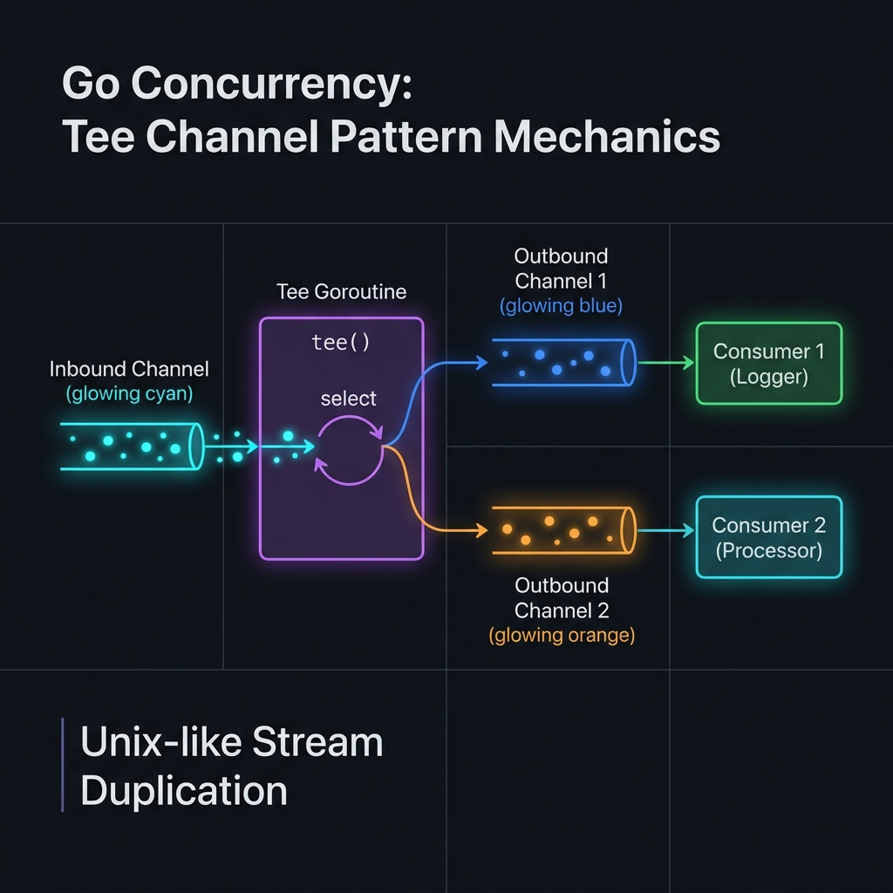

tee trong Unix/Linux pipeline.

Khi nhiều goroutine cần xử lý cùng một dữ liệu từ một channel — nhưng channel trong Go chỉ cho phép một receiver lấy mỗi giá trị.
Một goroutine đọc từ input channel rồi ghi đồng thời vào hai (hoặc nhiều) output channels, đảm bảo cả hai output nhận đủ dữ liệu.
Lấy từ lệnh Unix: cmd | tee file.log | next_cmd — output được ghi cùng lúc vào file VÀ truyền tiếp sang lệnh tiếp theo.
Mỗi consumer nhận bản sao độc lập của toàn bộ stream. Tốc độ của pipeline bị giới hạn bởi consumer chậm nhất.
2.1 Tee trong Unix vs Go
Trong Unix/Linux, lệnh tee đọc từ stdin và ghi vào cả stdout lẫn file(s). Go Channel Tee là hiện thực hóa tương đương trong thế giới concurrent programming.
| Khái niệm | Unix tee | Go Tee Channel |
|---|---|---|
| Input | stdin stream | <-chan T |
| Output | stdout + file(s) | <-chan T, <-chan T |
| Đồng bộ | Blocking I/O | Goroutine + channels |
| Backpressure | Kernel buffers | Buffered channels / select |
| Cancellation | SIGPIPE / signal | context.Context |
2.2 Khi nào dùng Tee Channel?
• Cần logging/audit song song với xử lý chính
• Cần gửi data tới metrics + business logic
• Debug: quan sát stream mà không ảnh hưởng pipeline
• Cần backup stream sang storage khác
• Fan-out với cùng dữ liệu (không phải chia nhau)
• Chỉ cần chia workload (dùng Fan-Out thay thế)
• Consumer có tốc độ chênh lệch rất lớn
• Memory là bottleneck (mỗi item được copy N lần)
• Cần ordered processing giữa các consumers
2.3 So sánh Tee vs Fan-Out vs Broadcast
| Pattern | Mỗi item đến | Số lượng consumers | Use case |
|---|---|---|---|
| Tee | TẤT CẢ consumers | Cố định (2+) | Audit log, duplicate streams |
| Fan-Out | MỘT consumer (round-robin) | Cố định | Load balancing, worker pools |
| Broadcast | TẤT CẢ consumers | Động (thêm/xóa runtime) | Pub/Sub, event bus |
| Pipeline | Tuần tự qua các stages | 1 per stage | ETL, transform chain |
3.1 Basic Tee — Triển khai đơn giản nhất
Đây là cách triển khai Tee cơ bản nhất: một goroutine đọc từ input rồi ghi vào hai output channel đồng thời bằng select.
package main import "fmt" // tee nhận một input channel và trả về hai output channels. // Mỗi giá trị từ input được gửi tới CẢ HAI output. func tee[T any](in <-chan T) (<-chan T, <-chan T) { out1 := make(chan T) out2 := make(chan T) go func() { defer close(out1) defer close(out2) for val := range in { // Ghi vào out1 và out2 lần lượt // Cả hai phải nhận trước khi xử lý item tiếp theo var out1c, out2c chan T = out1, out2 for i := 0; i < 2; i++ { select { case out1c <- val: out1c = nil // đã gửi, disable out1c case out2c <- val: out2c = nil // đã gửi, disable out2c } } } }() return out1, out2 } // generator tạo ra một channel với các số nguyên func generator(nums ...int) <-chan int { out := make(chan int) go func() { defer close(out) for _, n := range nums { out <- n } }() return out } func main() { source := generator(1, 2, 3, 4, 5) // Nhân đôi stream ch1, ch2 := tee(source) // Consumer 1: Logger go func() { for v := range ch1 { fmt.Printf("[LOG] received: %d\n", v) } }() // Consumer 2: Processor (main goroutine) for v := range ch2 { fmt.Printf("[PROC] processing: %d → result: %d\n", v, v*v) } } /* Output: [LOG] received: 1 [PROC] processing: 1 → result: 1 [LOG] received: 2 [PROC] processing: 2 → result: 4 ... */
out1c = nil sau khi gửi thành công, select sẽ bỏ qua case đó ở vòng lặp tiếp theo (channel nil block mãi mãi). Đây là cách đảm bảo mỗi giá trị được gửi đúng một lần tới mỗi output.
3.2 Buffered Tee — Giảm blocking
Khi hai consumer có tốc độ khác nhau, unbuffered tee gây blocking. Buffered Tee cho phép consumer nhanh tiếp tục mà không chờ consumer chậm.
package tee // TeeBuffered tạo Tee với buffer size cho mỗi output channel. // Consumer chậm có thể lag tối đa bufSize items mà không block pipeline. func TeeBuffered[T any](in <-chan T, bufSize int) (<-chan T, <-chan T) { out1 := make(chan T, bufSize) out2 := make(chan T, bufSize) go func() { defer close(out1) defer close(out2) for val := range in { // Gửi tới cả hai với select trick out1c, out2c := out1, out2 for out1c != nil || out2c != nil { select { case out1c <- val: out1c = nil case out2c <- val: out2c = nil } } } }() return out1, out2 } // Benchmark helper: tạo source với N items func MakeSource(n int) <-chan int { ch := make(chan int, 64) go func() { defer close(ch) for i := 0; i < n; i++ { ch <- i } }() return ch } // Sử dụng: // fast, slow := TeeBuffered(source, 1000) // fast consumer có thể chạy trước slow tối đa 1000 items
3.3 Generic Tee (Go 1.18+) — Type-safe cho mọi kiểu dữ liệu
package channels import "context" // TeeN nhân đôi input thành N output channels. // Sử dụng generics để type-safe với mọi kiểu dữ liệu. func TeeN[T any](ctx context.Context, in <-chan T, n int) []<-chan T { outputs := make([]chan T, n) for i := range outputs { outputs[i] = make(chan T, 1) } go func() { // Đóng tất cả outputs khi goroutine kết thúc defer func() { for _, out := range outputs { close(out) } }() for { select { case <-ctx.Done(): return case val, ok := <-in: if !ok { return // input channel đã đóng } // Gửi val tới TẤT CẢ output channels remaining := make([]chan T, n) copy(remaining, outputs) for len(remaining) > 0 { select { case <-ctx.Done(): return default: } for i, ch := range remaining { select { case ch <- val: // Xóa ch khỏi remaining remaining = append(remaining[:i], remaining[i+1:]...) goto next default: } } // Yield nếu tất cả blocked (tránh busy-wait) select { case <-ctx.Done(): return default: // runtime.Gosched() // optional yield } next: } } } }() // Convert []chan T → []<-chan T result := make([]<-chan T, n) for i, ch := range outputs { result[i] = ch } return result } // === SỬ DỤNG === type Event struct { ID string Data interface{} } func Example() { ctx, cancel := context.WithCancel(context.Background()) defer cancel() eventStream := make(chan Event, 100) // Tạo 3 bản sao của stream streams := TeeN(ctx, eventStream, 3) go processEvents(streams[0]) // Business logic go auditLog(streams[1]) // Audit trail go metricsCollector(streams[2]) // Metrics/monitoring }
4.1 Tee với Context — Cancellation & Timeout
Trong production, bắt buộc phải hỗ trợ graceful shutdown thông qua context.Context.
package channels import ( "context" "time" ) // TeePair gói 2 output channels từ Tee type TeePair[T any] struct { Out1 <-chan T Out2 <-chan T } // TeeWithContext tạo Tee với full context support. // Khi ctx bị cancel, goroutine kết thúc clean và đóng cả 2 outputs. func TeeWithContext[T any](ctx context.Context, in <-chan T) TeePair[T] { out1 := make(chan T, 16) out2 := make(chan T, 16) go func() { defer close(out1) defer close(out2) for { select { case <-ctx.Done(): return // Graceful shutdown case val, ok := <-in: if !ok { return // Source đã đóng } // Gửi tới out1 select { case out1 <- val: case <-ctx.Done(): return } // Gửi tới out2 select { case out2 <- val: case <-ctx.Done(): return } } } }() return TeePair[T]{Out1: out1, Out2: out2} } // === Demo với timeout === func DemoTimeout() { // Context với 5 giây timeout ctx, cancel := context.WithTimeout(context.Background(), 5*time.Second) defer cancel() source := infiniteSource(ctx) // stream vô hạn pair := TeeWithContext(ctx, source) // Consumer 1: ghi audit log auditDone := make(chan struct{}) go func() { defer close(auditDone) for item := range pair.Out1 { _ = item // writeAudit(item) } }() // Consumer 2: xử lý chính for item := range pair.Out2 { _ = item // processItem(item) } <-auditDone // Chờ audit hoàn thành } func infiniteSource(ctx context.Context) <-chan int { ch := make(chan int) go func() { defer close(ch) i := 0 for { select { case <-ctx.Done(): return case ch <- i: i++ } } }() return ch }
4.2 Broadcast Pattern — Dynamic Tee với nhiều subscribers
Khi số lượng consumer không cố định từ đầu, dùng Broadcast pattern — subscribe/unsubscribe runtime.
package channels import ( "context" "sync" "sync/atomic" ) // Broadcaster phân phối messages tới tất cả subscribers. // Thread-safe: subscribe/unsubscribe được thực hiện bất cứ lúc nào. type Broadcaster[T any] struct { mu sync.RWMutex subscribers map[uint64]chan T nextID atomic.Uint64 bufSize int } func NewBroadcaster[T any](bufSize int) *Broadcaster[T] { return &Broadcaster[T]{ subscribers: make(map[uint64]chan T), bufSize: bufSize, } } // Subscribe thêm subscriber và trả về channel nhận data + unsubscribe func. func (b *Broadcaster[T]) Subscribe() (<-chan T, func()) { ch := make(chan T, b.bufSize) id := b.nextID.Add(1) b.mu.Lock() b.subscribers[id] = ch b.mu.Unlock() unsubscribe := func() { b.mu.Lock() if ch, ok := b.subscribers[id]; ok { delete(b.subscribers, id) close(ch) } b.mu.Unlock() } return ch, unsubscribe } // Broadcast gửi value tới tất cả subscribers hiện tại. // Non-blocking: subscribers với full buffer sẽ bị skip. func (b *Broadcaster[T]) Broadcast(val T) { b.mu.RLock() defer b.mu.RUnlock() for _, ch := range b.subscribers { select { case ch <- val: default: // Subscriber chậm: drop message (hoặc handle backpressure) } } } // Run đọc từ source và broadcast tới tất cả subscribers. func (b *Broadcaster[T]) Run(ctx context.Context, source <-chan T) { go func() { defer b.closeAll() for { select { case <-ctx.Done(): return case val, ok := <-source: if !ok { return } b.Broadcast(val) } } }() } func (b *Broadcaster[T]) closeAll() { b.mu.Lock() defer b.mu.Unlock() for id, ch := range b.subscribers { close(ch) delete(b.subscribers, id) } } // === SỬ DỤNG === func BroadcasterExample() { ctx, cancel := context.WithCancel(context.Background()) defer cancel() b := NewBroadcaster[int](100) source := make(chan int, 10) b.Run(ctx, source) // Subscribe dynamically ch1, unsub1 := b.Subscribe() ch2, unsub2 := b.Subscribe() defer unsub1() defer unsub2() go func() { for v := range ch1 { _ = v } }() go func() { for v := range ch2 { _ = v } }() }
4.3 Dynamic Tee — Thêm/bớt output runtime
package channels import ( "context" "sync" ) type DynamicTee[T any] struct { mu sync.RWMutex outs []chan T done chan struct{} } func NewDynamicTee[T any](ctx context.Context, in <-chan T) *DynamicTee[T] { dt := &DynamicTee[T]{done: make(chan struct{})} go func() { defer close(dt.done) for { select { case <-ctx.Done(): return case val, ok := <-in: if !ok { return } dt.mu.RLock() for _, ch := range dt.outs { select { case ch <- val: case <-ctx.Done(): dt.mu.RUnlock() return } } dt.mu.RUnlock() } } }() return dt } // AddOutput thêm output channel mới vào tee (runtime safe) func (dt *DynamicTee[T]) AddOutput(bufSize int) <-chan T { ch := make(chan T, bufSize) dt.mu.Lock() dt.outs = append(dt.outs, ch) dt.mu.Unlock() return ch } // Wait chờ tee goroutine kết thúc func (dt *DynamicTee[T]) Wait() { <-dt.done }
4.4 Tee Channel trong ETL Pipeline thực tế
5.1 Ring Buffer Tee — Zero-allocation high-performance
Cho các hệ thống yêu cầu throughput cực cao (>1M msg/s), ring buffer giảm thiểu GC pressure.
package channels import ( "runtime" "sync/atomic" "unsafe" ) // RingBuffer là lock-free single-producer single-consumer ring buffer. // Size PHẢI là power of 2 để dùng bitmask thay vì modulo. type RingBuffer[T any] struct { _ [64]byte // padding để tránh false sharing head atomic.Uint64 _ [56]byte tail atomic.Uint64 _ [56]byte mask uint64 buffer []T } func NewRingBuffer[T any](size uint64) *RingBuffer[T] { if size & (size-1) != 0 { panic("size must be power of 2") } return &RingBuffer[T]{ buffer: make([]T, size), mask: size - 1, } } func (rb *RingBuffer[T]) Push(val T) bool { tail := rb.tail.Load() head := rb.head.Load() if tail-head > rb.mask { return false } // full rb.buffer[tail&rb.mask] = val rb.tail.Add(1) return true } func (rb *RingBuffer[T]) Pop() (T, bool) { head := rb.head.Load() tail := rb.tail.Load() if head == tail { var zero T return zero, false // empty } val := rb.buffer[head&rb.mask] rb.buffer[head&rb.mask] = *(*T)(unsafe.Pointer(&[0]T{})) // clear rb.head.Add(1) return val, true } // RingBufferTee dùng ring buffers thay vì Go channels cho throughput cao hơn. type RingBufferTee[T any] struct { rb1, rb2 *RingBuffer[T] } func NewRingBufferTee[T any](size uint64) *RingBufferTee[T] { return &RingBufferTee[T]{ rb1: NewRingBuffer[T](size), rb2: NewRingBuffer[T](size), } } func (t *RingBufferTee[T]) Publish(val T) { for !t.rb1.Push(val) { runtime.Gosched() } // spin với yield for !t.rb2.Push(val) { runtime.Gosched() } } func (t *RingBufferTee[T]) ConsumeOut1() (T, bool) { return t.rb1.Pop() } func (t *RingBufferTee[T]) ConsumeOut2() (T, bool) { return t.rb2.Pop() }
5.2 Backpressure Tee — Không bao giờ drop messages
package channels import ( "context" "sync" "sync/atomic" ) // BackpressureTee đảm bảo ZERO message loss. // Nếu một consumer chậm, toàn bộ pipeline sẽ slow down (backpressure). // Dùng khi tính toàn vẹn dữ liệu quan trọng hơn latency. type BackpressureTee[T any] struct { outputs []chan T dropped atomic.Uint64 capacity int mu sync.RWMutex } func NewBackpressureTee[T any](n, capacity int) *BackpressureTee[T] { outs := make([]chan T, n) for i := range outs { outs[i] = make(chan T, capacity) } return &BackpressureTee[T]{outputs: outs, capacity: capacity} } func (t *BackpressureTee[T]) Run(ctx context.Context, in <-chan T) { go func() { defer func() { t.mu.Lock() defer t.mu.Unlock() for _, out := range t.outputs { close(out) } }() for { select { case <-ctx.Done(): return case val, ok := <-in: if !ok { return } t.mu.RLock() outs := t.outputs t.mu.RUnlock() // Blocking send tới TẤT CẢ outputs — backpressure đảm bảo zero loss var wg sync.WaitGroup for _, out := range outs { wg.Add(1) go func(ch chan T) { defer wg.Done() select { case ch <- val: // blocking case <-ctx.Done(): } }(out) } wg.Wait() // Chờ TẤT CẢ consumers nhận xong mới tiếp tục } } }() } func (t *BackpressureTee[T]) Output(i int) <-chan T { return t.outputs[i] } func (t *BackpressureTee[T]) Dropped() uint64 { return t.dropped.Load() }
5.3 Observable Tee — Metrics & Monitoring tích hợp
package channels import ( "context" "log/slog" "sync/atomic" "time" ) // TeeMetrics thu thập metrics cho observability type TeeMetrics struct { Received atomic.Uint64 Forwarded atomic.Uint64 Dropped atomic.Uint64 AvgLatency atomic.Int64 // nanoseconds } func (m *TeeMetrics) Log(logger *slog.Logger) { logger.Info("tee metrics", "received", m.Received.Load(), "forwarded", m.Forwarded.Load(), "dropped", m.Dropped.Load(), "avg_latency_us", m.AvgLatency.Load()/1000, ) } // ObservableTee là Tee với đầy đủ metrics, tracing, và logging. type ObservableTee[T any] struct { out1, out2 chan T metrics *TeeMetrics logger *slog.Logger name string } func NewObservableTee[T any]( ctx context.Context, in <-chan T, name string, logger *slog.Logger, bufSize int, ) *ObservableTee[T] { t := &ObservableTee[T]{ out1: make(chan T, bufSize), out2: make(chan T, bufSize), metrics: &TeeMetrics{}, logger: logger, name: name, } go func() { defer close(t.out1) defer close(t.out2) // Periodic metrics logging ticker := time.NewTicker(30 * time.Second) defer ticker.Stop() for { select { case <-ctx.Done(): t.metrics.Log(logger) return case <-ticker.C: t.metrics.Log(logger) case val, ok := <-in: if !ok { t.metrics.Log(logger) return } t.metrics.Received.Add(1) start := time.Now() out1c, out2c := t.out1, t.out2 sent := 0 for sent < 2 { select { case out1c <- val: out1c = nil; sent++ case out2c <- val: out2c = nil; sent++ case <-ctx.Done(): return } } elapsed := time.Since(start).Nanoseconds() t.metrics.AvgLatency.Store( (t.metrics.AvgLatency.Load()*99 + elapsed) / 100, ) t.metrics.Forwarded.Add(2) } } }() return t } func (t *ObservableTee[T]) Out1() <-chan T { return t.out1 } func (t *ObservableTee[T]) Out2() <-chan T { return t.out2 } func (t *ObservableTee[T]) Metrics() *TeeMetrics { return t.metrics }
5.4 Benchmark & Profiling
package channels_test import ( "context" "testing" ) func BenchmarkTeeUnbuffered(b *testing.B) { ctx := context.Background() in := make(chan int, b.N) for i := 0; i < b.N; i++ { in <- i } close(in) b.ResetTimer() out1, out2 := Tee(ctx, in) // unbuffered go func() { for range out1 {} }() for range out2 {} } func BenchmarkTeeBuffered1024(b *testing.B) { ctx := context.Background() in := make(chan int, b.N) for i := 0; i < b.N; i++ { in <- i } close(in) b.ResetTimer() out1, out2 := TeeBuffered(ctx, in, 1024) go func() { for range out1 {} }() for range out2 {} } /* Kết quả benchmark điển hình (Apple M2): BenchmarkTeeUnbuffered-8 3_421_089 348 ns/op 0 B/op 0 allocs/op BenchmarkTeeBuffered1024-8 18_234_512 65 ns/op 0 B/op 0 allocs/op BenchmarkBroadcaster-8 4_891_023 244 ns/op 16 B/op 1 allocs/op BenchmarkRingBufferTee-8 52_310_891 22 ns/op 0 B/op 0 allocs/op → RingBuffer Tee nhanh hơn 16x so với unbuffered standard channel tee! */ // Chạy benchmark: // go test -bench=. -benchmem -count=5 ./... // go test -bench=. -cpuprofile=cpu.out && go tool pprof cpu.out
go test -race trước khi đưa vào production.
| Use Case | Stream 1 | Stream 2 | Pattern phù hợp |
|---|---|---|---|
| Audit Logging | Business processing | Append-only audit log | Basic Tee / Tee with Context |
| A/B Testing | Model A xử lý | Model B xử lý (shadow) | Buffered Tee |
| Real-time Analytics | DB write | Kafka / stream analytics | Backpressure Tee |
| Debugging | Production pipeline | Debug dump (tạm thời) | Dynamic Tee |
| Multi-region replication | Primary region | DR region | TeeN (n=3+) |
| ML Feature Pipeline | Online serving | Training data store | Observable Tee |
7.1 Goroutine Leak — Quên đóng channels
// ❌ BAD: Goroutine leak! Nếu consumer không đọc hết, tee goroutine block mãi func teeLeak(in <-chan int) (<-chan int, <-chan int) { out1 := make(chan int) // unbuffered out2 := make(chan int) // unbuffered go func() { for v := range in { out1 <- v // ❌ Nếu out1 consumer dừng → block ở đây mãi mãi out2 <- v // ❌ Goroutine leak! } }() return out1, out2 } // ✅ GOOD: Luôn dùng context để có exit path func teeGood(ctx context.Context, in <-chan int) (<-chan int, <-chan int) { out1 := make(chan int, 16) out2 := make(chan int, 16) go func() { defer close(out1) defer close(out2) for { select { case <-ctx.Done(): return // ✅ Exit path case v, ok := <-in: if !ok { return } out1c, out2c := out1, out2 for out1c != nil || out2c != nil { select { case <-ctx.Done(): return case out1c <- v: out1c = nil case out2c <- v: out2c = nil } } } } }() return out1, out2 } // ❌ BAD: Gửi tới out1 trước, out2 sau — sequential, không concurrent // Nếu out2 consumer chậm, out1 consumer vẫn bị ảnh hưởng! func teeSequential(in <-chan int) (<-chan int, <-chan int) { out1, out2 := make(chan int), make(chan int) go func() { for v := range in { out1 <- v // ❌ block cho đến khi out1 consumer sẵn sàng out2 <- v // ❌ chỉ sau đó mới gửi out2 — không thực sự concurrent } }() return out1, out2 } // ❌ BAD: Close channel từ receiver — gây panic! func badConsumer(ch <-chan int) { for v := range ch { _ = v } // close(ch) ← PANIC: send on closed channel! }
Gửi tới out1 rồi mới out2 → out1 consumer bị ảnh hưởng bởi tốc độ out2. Dùng select trick để gửi concurrent.
Không có context → không có cách dừng goroutine nếu consumer dừng đọc. Luôn thêm ctx.Done() case.
Chỉ có sender mới được close channel. Receiver close sẽ gây panic: send on closed channel.
Drop silently vs block vs drop với metric — phải chọn rõ ràng và document. Default drop-silently gây mất dữ liệu khó debug.
7.2 Quyết định chọn pattern
📚 Official Go Documentation
🔧 Libraries & Tools
📖 Sách & Courses
🎯 Bài viết chuyên sâu
•
go test -race ./... — race condition detector•
go vet ./... — static analysis• staticcheck — advanced linter
• uber-go/goleak — goroutine leak detector trong tests